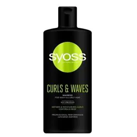

Syoss Moisture 440 mlKoszt: 14.99zł BruttoOpis: Syoss Moisture - szampon do włosówSzampon Syoss Moisture do włosów suchych i osłabionych. Formuła z Kompleksem aminokwasów i wodą klonowązapewnia efekt nawilżenia, przeciwdziałając suchości włosów do 48 h.Odżywia włosy bez obciążania oraz przywraca im miękkość i blask. Najważniejsze cechy: |
Syoss SalonPlex 440 mlKoszt: 14.99zł BruttoOpis: Syoss SalonPlex - szampon do włosówSzampon Syoss SalonPlex do włosówzniszczonych i nadwyrężonych. Formuła z kompleksem aminokwasów i kwiatem sakura odbudowuje zniszczone wiązania we włóknach włosów, zmniejszając ich łamliwość powodowaną częstym czesaniem i stylizacją. Dla optymalnych efektów stosuj także odżywkę Syoss SalonPlex. Najważniejsze cechy: |

Syoss Curls & Waves 440 mlKoszt: 14.99zł BruttoOpis: Syoss Curls & Waves - szampon do włosów
Szampon Syoss Curls&Waves do włosów falowanych i kręconych. Formuła z kompleksem aminokwasów i
proteinami soi podkreśla i nawilża loki oraz ogranicza puszenie się włosów bez użycia suszarki.
Najważniejsze cechy: |